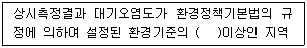

대기환경산업기사 (2005-03-06 기출문제)
1과목: 대기오염개론
1. 프로판가스 120kg을 액화시켜 만든 LPG가 기화될 때 표준상태에서의 용적은 얼마인가?
- 46Nm3
- 61Nm3
- 86Nm3
- 102Nm3
(정답률: 알수없음)

2. 굴뚝으로부터 배출되어지는 연기의 확산모양에 대한 설명중 틀린 것은?
- 환상형(looping)은 대기가 불안정하여 난류가 심할 때 발생하고, 지표면에서 일시적인 고농도 현상이 발생한다.
- 고기압지역에서 상층은 침강형역전이 형성, 하층은 복사형 역전을 형성할 때 구속형(trapping)으로 나타난다
- 부채형(fanning)은 대기가 매우 안정상태에서 발생하며 상하의 확산폭이 적어 지표에 미치는 오염도는 적다.
- 대기의 하층은 안정해졌으나 상층은 아직 불안정상태일 경우 훈증형(fumigation)이 나타나고 지표면에서의 오염도는 높다.
(정답률: 알수없음)
3. 대기오염물의 하나인 일산화탄소에 관한 다음 설명 중 틀린 것은?
- 대기 중에서 다른 오염물질과 유해한 화학반응을 일으키지 않는다.
- 토양 박테리아의 활동에 의해 이산화탄소로 산화되므로써 대기 중에서 제거된다.
- 물에 난용성이므로 비에 의한 영향을 거의 받지 않는다.
- 가장 많은량을 발생시키는 인위적 발생원은 석탄연소 및 공업(성유정제, 제철소등)이다.
(정답률: 알수없음)
4. 실제굴뚝고가 70m, 굴뚝내경 6m, 굴뚝가스 배출속도 15m/s, 굴뚝주위의 풍속이 5m/s 이라면 유효굴뚝높이는? (단, ΔH = (1.5Vs×D)/U 를 이용하라.)
- 67 m
- 97 m
- 127 m
- 147 m
(정답률: 알수없음)
5. 인체내에서 콜레스테롤, 인지질 및 지방분의 합성을 저해하거나 기타 다른 영양물질의 대사장해를 일으키는 대기오염물질(중금속)로 가장 적절한 것은?
- 셀렌(Se)
- 니켈(Ni)
- 바나듐(V)
- 아연(Zn)
(정답률: 알수없음)
6. 대기는 연직방향으로 몇 개의 기권으로 나눌 수 있다. 나누는 기준으로 가장 알맞는 것은?
- 대기성분 분포
- 온도의 고도분포 특징
- 역전층의 구분
- 공기밀도의 차이
(정답률: 알수없음)
7. 복사실의 공간이 120m3인 복사실의 공간에서 오존의 배출량이 분당 240㎍인 복사기를 연속 사용하고 있다. 이 복사기를 사용하기 전의 실내 오존의 농도가 170㎍/Nm3라고 할때 6시간 사용 후 복사실의 오존농도는 몇 ppb인가? (단, 0℃, 1기압 기준, 환기없음)
- 265
- 358
- 415
- 510
(정답률: 알수없음)
8. '공기역학적 직경'의 정의로 가장 알맞는 것은?
- 본래의 먼지보다 침강속도가 작은 구형입자의 직경
- 본래의 먼지보다 침강속도가 큰 구형입자의 직경
- 본래의 먼지와 밀도 및 침강속도가 동일한 구형입자의 직경
- 본래의 먼지와 침강속도가 동일하며, 밀도 1g/cm3인 구형입자의 직경
(정답률: 알수없음)
9. 먼지에 관한 설명으로 가장 알맞는 것은?
- 입경이 클수록 응집성이 높다.
- 입경이 클수록 비표면적이 크다.
- 비표면적이 작을수록 부착력이 크다.
- 진비중이 클수록 침강속도가 크다.
(정답률: 알수없음)
10. 지상 10m에서의 풍속이 3m/s라면 60m에서의 풍속은? (단, 대기안정도와 지면거칠기에 의해 결정되는 p=0.4)
- 5.2m/s
- 5.5m/s
- 6.1m/s
- 6.8m/s
(정답률: 알수없음)
11. 경도풍은 다음의 3가지 힘이 평형을 이루면서 부는 바람을 말한다. 이와 관련이 가장 적은 힘은?
- 마찰력
- 기압경도력
- 원심력
- 전향력
(정답률: 알수없음)
12. 리차드슨 수(R)가 큰 음의 값을 가질 경우에 대한 설명으로 가장 알맞는 것은?
- 대류가 지배적이어서 바람이 강하게 되어 강한 수직운동이 일어난다.
- 대류가 지배적이어서 바람이 약하게 되어 강한 수직운동이 일어난다.
- 기계적 난류가 지배적이어서 바람이 강하게 되어 강한 수직운동이 일어난다.
- 기계적 난류가 지배적이어서 바람이 약하게 되어 강한 수직운동이 일어난다.
(정답률: 알수없음)
13. 아황산가스에 약한 지표식물과 가장 거리가 먼 것은?
- 대맥
- 담배
- 자주개나리
- 장미
(정답률: 알수없음)
14. 지상으로부터 500m까지의 평균 기온감률은 1.2℃/100m이다. 100m 고도의 기온이 17℃라 하면 고도 400m 에서의 기온은?
- 10.6℃
- 11.8℃
- 12.2℃
- 13.4℃
(정답률: 알수없음)
15. 다음 중 교외지역에 비해 온도가 높게 나타나는 도시열섬 효과를 가져오는 원인과 가장 거리가 먼 것은?
- 인공열 발생의 증가
- 건물 등 구조물에 의한 거칠기 길이의 변화
- 지표면의 열적성질 차이
- 기온역전
(정답률: 알수없음)
16. 휘발유 자동차의 엔진 가동형태에 따라 오염물질의 배출량은 달라진다. 이때 탄화수소(HC)가 가장 많이 발생하는 엔진의 작동상태는?
- 공전
- 운행
- 가속
- 감속
(정답률: 알수없음)
17. 다음 중 다이옥신(Dioxin)의 설명으로 틀린 내용은?
- 700℃ 이상의 고온에서 염소공여체와 반응하여 재생성 된다.
- 열적안정성이 좋고 증기압과 수용성이 낮다.
- 다이옥신류인 PCDD는 75개, PCDF는 135개의 이성질체를 가진다.
- 유기염소계 화합물을 소각하는 과정등에서 발생한다.
(정답률: 알수없음)
18. 대기중에 존재하는 기체상 질소산화물 중 대류권에서는 온실가스로 알려져 있고 일명 웃음의 기체라고도 하며 성층권에서는 오존층 파괴물질로 알려져 있는 것으로 가장 적절한 것은?
- N2O3
- NO3
- N2O5
- N2O
(정답률: 알수없음)
19. 다음 중 2차 오염물질이 아닌 것은?
- SO3
- NOCl
- NaCl
- H2O2
(정답률: 알수없음)
20. 대기오염현상 중 광화학스모그에 대한 설명으로 옳지 않은 것은?
- 미국 로스엔젤레스에서 시작되어 최근에는 자동차 운행이 많은 대도시지역에서 발생하고 있다.
- 일사량이 크고 대기가 안정되어 있을 때 잘 발생된다.
- 주된 원인물질은 자동차배기가스내 포함된 PAN, 옥시탄트 화합물의 대기확산이다.
- 광화학산화물인 오존의 농도는 아침에 서서히 증가하기 시작하여 일사량이 최대인 오후에 최대가 되고 다시 감소한다.
(정답률: 알수없음)
2과목: 대기오염 공정시험 기준(방법)
21. 흡광차분광법에서 사용하는 발광부의 광원으로 적절한 것은?
- 중공음극램프
- 텅스텐램프
- 자외선램프
- 제논램프
(정답률: 알수없음)
22. 램버트 비어(Lamber-beer)의 법칙에 대한 설명이다. 이 중 잘못 설명된 것은? (단, Io = 입사광의 강도, It = 투사광의 강도, C = 농도, l = 빛의 투과거리, ε= 흡광계수)
- It = Io·10-εCl
- log(1/t) = A를 흡광도라 한다.
- A=εCl
- Io/It = t를 투과도라 한다.
(정답률: 알수없음)
23. 비분산 적외선 분석법에 관한 내용 중 알맞지 않은 것은?
- 대기 및 굴뚝 배출가스 중의 오염물질을 연속적으로 측정하는 비분산 정필터형 적외선 가스분석계에 대하여 적용한다.
- 광원은 원칙적으로 중공음극램프를 사용하며 감도를 높이기 위하여 텅스텐램프를 사용하기도 한다.
- 선택성 검출기를 이용 시료 중 특성성분에 의한 적외선의 흡수량 변화를 측정하여 시료 중 들어있는 특정 성분농도를 측정한다.
- 적외선가스분석계는 고정형과 이동형으로 분류된다.
(정답률: 알수없음)
24. 굴뚝등에서 배출되는 배출가스 중 염화수소의 분석방법이 아닌 것은?
- 티오시안산 제이수은흡광광도법
- 질산은 적정법
- 이온전극법
- 가스크로마토그래프법
(정답률: 알수없음)
25. 분석시험에 관한 기재 및 용어설명이 맞는 것은?
- '정확히 단다'라 함은 규정한 량의 전체를 취하여 분석용 저울로 1mg까지 다는 것을 뜻한다.
- 감압 또는 진공이라 함은 따로 규정이 없는 한1.5mmHg 이하를 뜻한다.
- 용액의 액성표시는 따로 규정이 없는 한 유리전극법에 의한 pH 미터로 측정한 것을 뜻한다.
- 시험조작 중 '즉시'란 10초 이내에 표시된 조작을 하는 것을 뜻한다.
(정답률: 알수없음)
26. 굴뚝 등에서 배출되는 배출가스 중 암모니아 측정법의 중화적정법으로 분석하기 가장 적합한 경우는?
- 시료가스 채취량을 40ℓ로 하였을 때 암모니아 농도가 100 ppm 이상인 경우
- 시료가스 채취량을 40ℓ로 하였을 때 암모니아 농도가 100 ppm 미만인 경우
- 시료가스 채취량을 20ℓ로 하였을 때 암모니아 농도가 10 ppm 이상인 경우
- 시료가스 채취량을 20ℓ로 하였을 때 암모니아 농도가 10 ppm 미만인 경우
(정답률: 알수없음)
27. 흡광광도법 중 파라로자닐린법으로 분석할 수 있는 환경 대기중의 오염물질은?
- 일산화탄소
- 질소산화물
- 옥시단트
- 아황산가스
(정답률: 알수없음)
28. 굴뚝에서 배출되는 가스중의 이황화탄소를 흡광광도법으로 측정할때 시료가스 채취량 10ℓ인 경우 가장 적당한 이황화탄소의 농도적정 범위는?
- 1∼3V/Vppm
- 3∼60V/Vppm
- 60∼250V/Vppm
- 250∼500V/Vppm
(정답률: 알수없음)
29. 굴뚝 등에서 배출되는 가스중의 카드뮴 화합물 측정에서 채취한 시료와 그 성상에 따른 처리 방법으로 옳지 않은 것은?
- 다량의 유기물과 유리탄소를 함유한 것은 저온회화법으로 처리
- 유기물을 함유하지 않은 것은 질산법으로 처리
- 셀룰로스 섬유제 여과지를 사용한 것은 질산-과산화수소법으로 처리
- 타르 기타 소량의 유기물을 함유하는 것은 질산-염산법으로 처리
(정답률: 알수없음)
30. 다음 사항 중 이온크로마토그래프법의 주요 구성요소와 관련이 없는 사항는?
- 용리액조
- 송액펌프
- 써브렛서
- 파장선택부
(정답률: 알수없음)
31. 아르세나조 Ⅲ법에 의하여 굴뚝에서 배출되는 배출가스중 황산화물을 측정시 사용되는 시약이 아닌 것은?
- 과산화수소
- 이소프로필알콜
- 초산바륨
- 수산화나트륨
(정답률: 알수없음)
32. 흡광광도법에 의한 브롬(Br)정량시 사용되는 흡수액은?
- NaOH 용액
- H2O2 용액
- NH4 용액
- HCl 용액
(정답률: 알수없음)
33. 다음은 굴뚝 배출가스 중의 불소화합물 분석법에 대한 설명이다. 틀리는 것은?
- 질산토륨 - 네오트린법에서는 불소이온을 분리한 다음 pH를 조절, 네오트린을 가하여 흡광도를 측정한다.
- 란탄 - 알리자린 콤플렉손법에서는 흡수액을 희석하여 pH를 조절한 다음 란탄과 알리자린 콤플렉손을 가하여 흡광도를 측정한다.
- 시료채취관은 불소에 부식되지 않는 재질(스텐리스강관등)을 사용한다.
- 배출가스중의 무기 불소화합물은 불소이온으로 하여 분석한다.
(정답률: 알수없음)
34. 굴뚝등에서 배출되는 배출가스 중의 황산화물 분석법인 중화적정법에서 종말점의 색은?
- 자주색
- 녹색
- 적색
- 청색
(정답률: 알수없음)
35. 환경오염공정시험방법에서 설명한 밀봉용기란?
- 물질을 취급 또는 보관하는 동안에 이물이 들어가거나 또는 내용물이 손실되지 않도록 보호하는 용기
- 물질을 취급 또는 보관하는 동안에 밖으로 부터의 공기 또는 다른가스가 침입하지 아니하도록 내용물을 보호하는 용기
- 물질을 취급 또는 보관하는 동안에 내용물이 광화학적 변화를 일으키지 않도록 보호하는 용기
- 물질을 취급 또는 보관하는 동안에 기체 또는 미생물이 침입하지 않도록 내용물을 보호하는 용기
(정답률: 알수없음)
36. 온도 170℃인 배출가스를 피토우관으로 측정한 결과 동압이 15mmH2O였다. 유속(m/sec)은? (단, 습한 배출가스 밀도는 1.3kg/Sm3, 피토우관계수는 1.5 이다.
- 43.2
- 28.8
- 19.2
- 12.8
(정답률: 알수없음)
37. 시험의 기재 및 용어 설명으로 맞지 않는 것은?
- 액체성분량을 '정확히 취한다'함은 홀피펫, 메스플라스크 또는 이와 동등이상의 정확도를 갖는 용량계를 사용하여 조작함을 뜻한다.
- '항량이 될때까지 건조한다'라 함은 1시간정도 더 건조한 전후 무게차가 매 g당 0.1mg 이하일때 이다.
- '정확히 단다'라 함은 검체를 분석용 저울로 0.1mg까지 정량한 것을 뜻한다.
- '상온'이란 15∼25℃를 말한다
(정답률: 알수없음)
38. 배기가스 분석대상 성분과 그 분석방법 및 흡수액 항이 옳지 않은 것은?
- 페놀 → 흡광광도법 → 수산화나트륨용액
- 황산화물 → 침전적정법 → 과산화수소수용액
- 질소산화물 → 살츠만법 → 무수설파닌산나트륨용액
- 염소 → 오르토톨리딘법 → 오르토톨리딘염산염용액
(정답률: 알수없음)
39. 연료의 연소등으로 굴뚝에서 배출되는 가스중 일산화탄소를 정량할 때 사용하는 분석방법과 가장 거리가 먼 것은?
- 비분산적외선 분석법
- 흡광광도법
- 가스크로마토그래프법
- 정전위 전해법
(정답률: 알수없음)
40. 원자흡광광도법에서 시료중의 분석원소 농도를 구하는 정량법과 가장 거리가 먼 것은?
- 검량선법
- 넓이백분율
- 표준첨가법
- 내부표준법
(정답률: 알수없음)
3과목: 대기오염방지기술
41. 송풍기를 통한 인공통풍시 송풍량이 1500 m3/min, 송풍기의 압력손실이 250mmHg이고 송풍기의 효율이 70%라면 이때 소요되는 동력(kW)은? (단, 송풍기의 여유율은 1.2이다)
- 84
- 93
- 1⑤
- 126
(정답률: 알수없음)
42. 주요 화합물별 냄새의 특징과 원인물질이 잘못 짝지어진 것은?
- 황화합물- 양파, 양배추 썩는 냄새- 메틸메르캅탄
- 질소산화물- 분뇨냄새- 암모니아
- 지방산류- 생선 썩는 냄새- 에틸아민
- 탄화수소류- 가솔린 냄새- 자일렌
(정답률: 알수없음)
43. 입자직경 50μm, 입자의 최종침전속도가 32cm/sec 라고 할때 중력침전실의 높이가 1.5m 이면, 입자를 완전히 제거하기 위해 소요되는 이론적인 중력침전실의 길이는? (단, 가스유속은 2m/sec이다.)
- 21.6m
- 18.5m
- 16.7m
- 9.4m
(정답률: 알수없음)
44. 순수한 프로판으로 구성된 LPG 1000kg을 기화하여 얻을 수 있는 기체연료의 용적은?
- 254Nm3
- 509Nm3
- 763Nm3
- 1016Nm3
(정답률: 알수없음)
45. 어느 보일러의 배출가스 조성은 CO2 : 10%, O2 : 10%, N2 : 80%였다면 공기비는?
- 1.9
- 2.7
- 3.2
- 4.4
(정답률: 알수없음)
46. 유량 500,000 m3/day의 공기를 흡수탑을 거쳐 정화하려고 한다. 흡수탑의 접근 유속을 2.0m/sec로 유지하려면 소요되는 흡수탑의 지름은?
- 1.2m
- 1.7m
- 1.9m
- 2.5m
(정답률: 알수없음)
47. 프로필렌(C3H6) 20kg를 완전 연소하기 위해 필요한 공기량은?
- 114Nm3
- 229Nm3
- 343Nm3
- 456Nm3
(정답률: 알수없음)
48. 연소시 발생되는 질소산화물(NOx)의 발생을 방지하는 기술이라 볼 수 없는 것은?
- 배기가스 재순환
- 연소부분 냉각
- 2단 연소
- 높은 과잉공기사용
(정답률: 알수없음)
49. 어떤 가스가 부피로 H2 9%, CO 24%, CH4 2%, CO2 6%, O2 3%, N2 56%의 구성비를 갖는다. 이 기체를 50%의 과잉공기로 연소시킬 경우 연료 1Nm3당 요구되는 공기량은?
- 약 1.00 Nm3
- 약 1.25 Nm3
- 약 1.50 Nm3
- 약 1.75 Nm3
(정답률: 알수없음)
50. 배출가스중의 질소산화물의 처리방법인 촉매환원법에 적용하고 있는 일반적인 환원가스와 가장 거리가 먼 것은?
- H2S
- NH3
- CO2
- CH4
(정답률: 알수없음)
51. 여과집진장치에 사용되는 여포에 관한 내용중 알맞지 않은 것은?
- 여포의 형상은 원통형, 평판형등이 있으나 주로 원통형을 사용한다.
- 여포는 내열성이 약하므로 가스온도 250℃를 넘지 않도록 주의한다.
- 고온가스를 냉각시킬 때에는 산노점이하를 유지하여 여과포의 눈막힘을 방지한다.
- 여포재질중 목면은 내산성은 불량하나 가격이 저렴하다
(정답률: 알수없음)
52. 합판공장의 배기가스량은 400m3/min, 분진부하 4.6g/m3 이라면 직경 40㎝, 길이 400㎝, 여과백을 사용할 경우 이 가스를 제진하기 위해서 몇개의 여과백이 필요한가? (단, 여과속도 : 0.6m/min)
- 133개
- 198개
- 236개
- 265개
(정답률: 알수없음)
53. 분진의 농도가 60.0g/Sm3 되는 함진가스를 정상적인 운전 상태에서 싸이클론으로 집진할때 집진율은 95%가 된다고 한다. 이 싸이클론의 원추하부에 처리가스량의 10%에 상당하는 외부공기가 새어들어 가면 통과율은 정상운전 때의 2배가 된다고 하면 이때의 출구 분진 농도는?
- 4.0 g/Sm3
- 4.5 g/Sm3
- 5.0 g/Sm3
- 5.5 g/Sm3
(정답률: 알수없음)
54. 유해가스와 물이 일정한 온도에서 평형 상태에 있다. 기상의 유해가스의 분압이 76mmHg일 때 수중가스의 농도가 16.5kgmol/m3이다. 헨리정수(atm·m3/kgmol)는?
- 2.0 × 10-3
- 3.0 × 10-3
- 6.0 × 10-3
- 9.0 × 10-3
(정답률: 알수없음)
55. 세정집진장치의 장·단점을 기술한 것으로 틀린 것은?
- 입자상 물질 및 가스상 물질의 동시 제거가 가능하나 소수성 먼지의 집진효과는 낮다.
- 제진된 먼지의 재비산 염려가 없다.
- 고온가스의 냉각용으로도 사용되나 폭발성 및 연소성 가스의 처리에는 부적당하다.
- 구조와 조작이 간단하나 압력손실과 동력소비량이 크고 또한 많은 물이 필요하다.
(정답률: 알수없음)
56. 흡착에 의한 유해가스의 처리에 있어 돌파 현상이 일어나게 되면 어떤 현상이 일어나게 되는가?
- 배출가스의 양이 갑자기 감소한다.
- 배출가스의 양이 갑자기 증가한다.
- 배출가스중 오염물질 농도가 갑자기 감소한다.
- 배출가스중 오염물질 농도가 갑자기 증가한다.
(정답률: 알수없음)
57. 유체의 흐름에서 층류와 난류를 구분하는 척도의 무차원수인 레이놀즈 수를 나타내는 식은? (단, D는 관경, V는 유체의 유속, ρ는 유체의 밀도, μ는 유체의 점도이다.)
- Re = μVD / ρ
- Re = μV / ρD
- Re = ρVD / μ
- Re = ρμD / V
(정답률: 알수없음)
58. 싸이크론 원추하부의 반경이 25cm, 배출가스의 접선속도가 6m/sec 일때 분리계수는?
- 14.7
- 16.9
- 21.3
- 24.0
(정답률: 알수없음)
59. 황함량 1.1%인 중유를 2000kg/hr로 연소할 때 생성되는 SO2가스의 양은 대략 얼마인가? (단, 황분은 모두 SO2로 된다.)
- 10 Sm3/hr
- 15 Sm3/hr
- 20 Sm3/hr
- 25 Sm3/hr
(정답률: 알수없음)
60. 다음 석탄의 특성을 설명한 것 중 맞는 것은?
- 고정탄소의 함량이 큰 연료는 발열량이 높다.
- 회분이 많은 연료는 발열량이 높다.
- 탄화도가 높을수록 착화온도는 낮아진다.
- 휘발분 함량이 큰 연료는 매연을 적게 발생시킨다.
(정답률: 알수없음)
4과목: 대기환경 관계 법규
61. 대기환경보전법에서 사용하는 용어의 정의가 틀린 것은?
- '기후·생태계변화 유발물질'이라 함은 기후온난화 등으로 생태계의 변화를 가져올 수 있는 기체상물질로서 환경부령이 정하는 것을 말한다.
- '가스'라 함은 물질의 연소·합성·분해시에 발생하거나 화학적 성질에 의하여 발생하는 기체상물질을 말한다.
- '먼지'라 함은 대기중에 떠다니거나 흩날려 내려오는 입자상 물질을 말한다.
- '검댕'이라 함은 연소시에 발생하는 유리탄소가 응결하여 입자의 지름이 1미크론 이상이 되는 입자상물질을 말한다.
(정답률: 알수없음)
62. 위임업무보고사항 중 '휘발성유기화합물 배출시설 지도, 점검 실적'의 보고 횟수 기준으로 알맞는 것은?
- 연 1회
- 연 2회
- 연 4회
- 연 6회
(정답률: 알수없음)
63. 기본 부과금의 징수유예기간과 분할납부 횟수기준으로 가장 적절한 것은?
- 유예한 날의 다음날부터 1년이내, 6회이내
- 유예한 날의 다음날부터 1년이내, 4회이내
- 유예한 날의 다음날부터 다음 부과기간의 개시일전일까지, 6회이내
- 유예한 날의 다음날부터 다음 부과기간의 개시일전일까지, 4회이내
(정답률: 알수없음)
64. 최초로 대기 배출시설을 설치한 경우 사업자가 환경관리인의 임명신고 시기는?
- 가동개시신고와 동시
- 가동개시신고 후 5일이내
- 배출시설설치 허가신청서 접수시
- 배출시설설치 허가를 받은 후 5일이내
(정답률: 알수없음)
65. 관계공무원의 출입, 검사를 거부, 방해, 또는 기피한 자에 대한 행정처분기준으로 적절한 것은?
- 1년이하의 징역 또는 500만원이하의 벌금
- 200만원이하의 벌금
- 100만원이하의 벌금
- 100만원이하의 과태료
(정답률: 알수없음)
66. 대기오염물질발생량의 합계가 연간 100톤인 사업장은 몇종사업장으로 구분되는가?
- 1종 사업장
- 2종 사업장
- 3종 사업장
- 4종 사업장
(정답률: 알수없음)
67. 대기환경보전법의 규정에 의한 대기오염방지시설이 아닌것은?
- 촉매반응을 이용하는 시설
- 응축에 의한 시설
- 간접연소에 의한 시설
- 오존산화에 의한 시설
(정답률: 알수없음)
68. 조업정지처분에 갈음하여 부과할 수 있는 과징금의 최고 액수는?
- 1억
- 2억
- 3억
- 5억
(정답률: 알수없음)
69. 다음은 대기환경규제지역의 지정대상지역에 대한 설명이다. ( )안에 알맞는 내용은?

- 60%
- 70%
- 80%
- 90%
(정답률: 알수없음)
70. 대기환경보전법의 규정에 의한 자동차연료형 첨가제의 종류가 아닌 것은?
- 세척제
- 청정분산제
- 다목적첨가제
- 옥탄가억제제
(정답률: 알수없음)
71. 측정기기의 운영 및 관리기준중 굴뚝의 온도를 측정하기위한 온도계는 국가표준기본법에 의한 교정검사를 연 1회이상 받아야 하며 그 기록을 몇 년 이상 보관하여야 하는 가?
- 6개월
- 1년
- 2년
- 3년
(정답률: 알수없음)
72. 비산먼지 발생사업이 시멘트, 석회, 프라스터 및 시멘트관련 제품의 제조 및 가공업인 경우에 신고대상사업과 거리가 먼 것은?
- 시멘트 제조업, 가공 및 저장업
- 석회제조업
- 프라스터제조업
- 시멘트, 석회 및 프라스터 운송업
(정답률: 알수없음)
73. 공동 방지시설을 설치하고자 하는 공동방지시설 운영기구의 대표자가 시·도지사에게 제출하여야 할 서류가 아닌것은?
- 공동방지시설의 위치도(축척 2만5천분의 1의 지형도를 말한다)
- 공동방지시설의 오염물질 배출량 예측서
- 공동방지시설의 설치명세서 및 그 도면
- 공동방지시설의 운영에 관한 규약
(정답률: 알수없음)
74. 특별시장·광역시장 또는 도지사가 설치하는 대기오염 측정망에 해당하지 않는 것은?
- 도로변 대기 측정망
- 지역대기 측정망
- 산성강하물 측정망
- 시정거리 측정망
(정답률: 알수없음)
75. 대기오염 경보단계별 오염물질의 농도기준 규정 중 발령기준이 맞는 것은?
- 기상조건등을 검토하여 해당 지역내 대기자동측정소의 오존농도는 30분 평균농도를 기준으로 하며 해당 지역내 1개 이상 측정소에 경보단계별 발령기준을 초과하면 경보를 발령한다.
- 기상조건등을 검토하여 해당 지역내 대기자동측정소의 오존농도는 1시간 평균농도를 기준으로 하며 해당지역내 1개 이상 측정소에 경보단계별 발령기준을 초과하면 경보를 발령한다.
- 기상조건등을 검토하여 해당 지역내 대기자동측정소의 오존농도는 30분 평균농도를 기준으로 하며 해당 지역내 2개 이상 측정소에 경보단계별 발령기준을 초과하면 경보를 발령한다.
- 기상조건등을 검토하여 해당 지역내 대기자동측정소의 오존농도는 1시간 평균농도를 기준으로 하며 해당 지역내 2개 이상 측정소에 경보단계별 발령기준을 초과하면 경보를 발령한다.
(정답률: 알수없음)
76. 기후, 생태계변화 유발물질과 가장 거리가 먼 것은?
- 염화불화수소
- 과불화탄소
- 메탄
- 육불화황
(정답률: 알수없음)
77. 대기환경관리인 교육에 관한 내용으로 틀린 것은?
- 교육기간은 5일 이내
- 교육기관은 환경보전협회
- 신규교육은 환경관리인으로 임명된 날부터 1년 이내에 1회 실시
- 보수교육은 환경관리인으로 임명된 날부터 3년 마다 1회 실시
(정답률: 알수없음)
78. 이산화질소(NO2)의 대기환경기준으로 적절한 것은?
- 연간평균치 0.02ppm 이하
- 연간평균치 0.⑤ppm 이하
- 연간평균치 0.1ppm 이하
- 연간평균치 0.15ppm 이하
(정답률: 알수없음)
79. 대기환경보전법에서 자동차 연료(휘발유)제조기준 중 납함량기준은?
- 0.⑤g/ℓ이하
- 0.01g/ℓ이하
- 0.013g/ℓ이하
- 0.0⑤g/ℓ이하
(정답률: 알수없음)
80. 대기오염물질 배출허용기준 초과 일일오염물질 배출량의 산정방법 중 일반 오염물질에 대해서 소숫점이하 몇째자리까지 계산하여야 하는가?
- 소수점 이하 첫째자리까지
- 소수점 이하 둘째자리까지
- 소수점 이하 셋째자리까지
- 소수점 이하 넷째자리까지
(정답률: 알수없음)
프로판의 몰 수 = 120,000g ÷ 44g/mol = 2,727.27mol
부탄의 몰 수 = 120,000g ÷ 58g/mol = 2,068.97mol
이제, LPG가 기화될 때 발생하는 가스의 용적을 계산할 수 있다. 이때, 가스의 용적은 온도와 압력에 따라 달라지므로, 표준상태에서의 용적을 계산해야 한다. 표준상태에서의 온도는 0℃이고, 압력은 1기압이다.
표준상태에서의 용적 = (표준상태의 몰 수) × (기체 상수) × (온도) ÷ (압력)
= (2,727.27mol + 2,068.97mol) × 8.31J/mol·K × 273K ÷ 101325Pa
= 60.9m3 ≈ 61Nm3
따라서, LPG가 기화될 때 표준상태에서의 용적은 61Nm3이다.